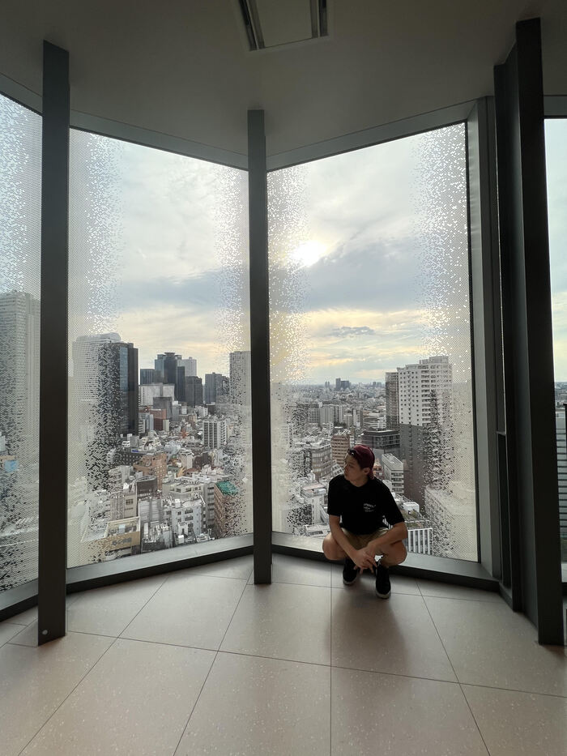
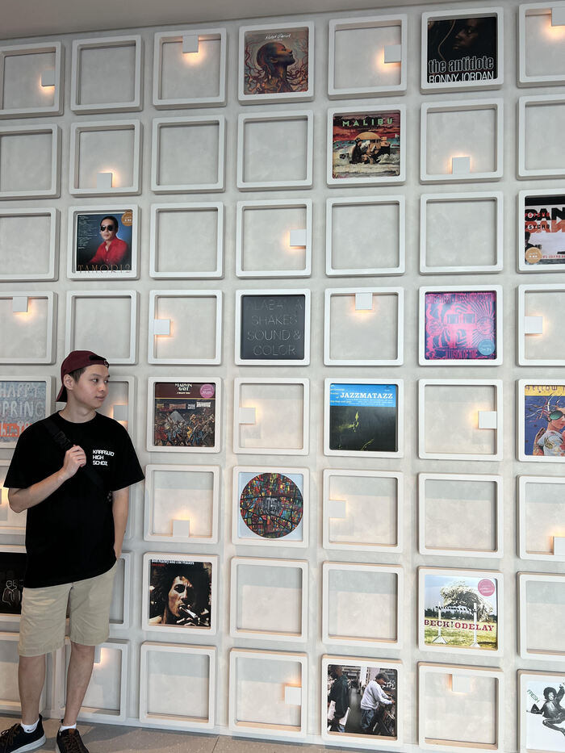

30 days in Japan
Japan trip with my brother
Week 1 - Kabukicho
Japan's most famous entertainment district known for adult-oriented nightlife. Small clubs, smoky pubs and late-night snack bars.
Kabukicho Tower, the multi-story entertainment complex opened in 2023, and has a game center, escape room, food hall, and live music venue.
1 / 4
Kabukicho street
2 / 4

1st floor of Kabukicho tower
3 / 4

Top floor of Kabukicho tower
4 / 4

Oldschool album covers
Shibuya
The lively hub of Shibuya is the youth heart and soul of Tokyo. With world-famous sights including the iconic scramble crossing, this area is a must-see for nightlife and trendy youth culture.
Below is a video of me walking the Shibuya crosswalk
Red Tokyo Tower
A red and white tower inspired by the Eiffel Tower in Paris. This tower is perhaps Tokyo's most beloved retro icon and at over 333 metres tall.
Within the tower is Japan's largest VR/AR/eSports Theme Park